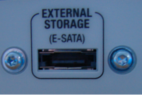
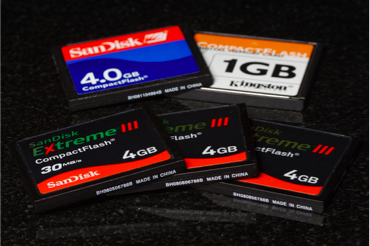
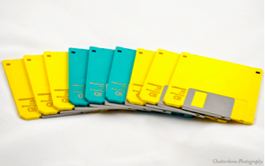

Install and Configure Expansion Cards <<
Previous Next >> Storage Devices-Hard Disk Drives
Storage Devices-Overview
As we discussed in a previous module, storage is one function that makes a computer a computer. So, storage devices are a critical component. Storage devices hold all of the bits and bytes that make up the data we process, photographs, music, and more. There are many different types of storage devices used with modern computers, including hard drives, optical drives, and external drives. Some computers still have legacy storage devices such as floppy disks.
正如我們在上一個模塊中討論的那樣，存儲是一種使計算機成為計算機的功能。因此，存儲設備是關鍵組件。存儲設備保留構成我們處理的數據，照片，音樂等的所有位和字節。現代計算機使用許多不同類型的存儲設備，包括硬盤驅動器，光盤驅動器和外部驅動器。某些計算機仍具有舊式存儲設備，例如軟盤。
Storage Devices: Optical Drives
Optical drives refer to any disk drive that uses optical media, such as CDs, DVDs, or Blu-ray disks. Each disk has a different storage capacity due to the different wavelength of light the laser uses to read the disk, with shorter wavelengths enabling more data to be stored in the same physical space. CDs use infrared light, which has a long wavelength. DVDs use a red laser light, a light with a medium wavelength. Blu-ray uses a blue laser light, which has the shortest wavelength. A CD can hold 700 MB of data, or 80 minutes of music, a DVD can hold 4.7 GB on a standard disc and 8.4 GB on a dual-layer disc. Blu-ray disks can hold 25 GB on a standard disk and 50 GB on a dual-layer disc. Most contemporary workstations have a DVD writer, but Blu-ray writers are becoming more common. Also, each successive technology is backward compatible with the others, therefore a Blu-ray player can also read DVDs and CDs. However, a CD or DVD player cannot read a Blu-ray.
光盤驅動器是指使用光盤，CD或DVD或藍光光盤等任何光學介質的磁盤驅動器。由於激光讀取磁盤所使用的光波長不同，每個磁盤具有不同的存儲容量，而較短的波長使更多數據可以存儲在同一物理空間中。 CD使用的紅外光波長很長。 DVD使用紅色激光，即中等波長的光。藍光使用波長最短的藍色激光。 CD可以容納700 MB的數據或80分鐘的音樂，DVD可以在標準光盤上容納4.7 GB，在雙層光盤上可以容納8.4 GB。藍光磁盤在標準磁盤上可以容納25 GB，在雙層磁盤上可以容納50 GB。大多數當代工作站都有DVD刻錄機，但是藍光刻錄機正變得越來越普遍。同樣，每種連續技術都向後兼容，因此藍光播放器還可以讀取DVD和CD。但是，CD或DVD播放器無法讀取藍光。
The different devices use different nomenclature for their capabilities. A CD-ROM, DVD-ROM, and BD-ROM (Blu-ray) all indicate that the device is a read-only memory (ROM) device. A device that is recordable only once is identified with an “R.” On a CD-R, DVD-R, DVD+R or BD-R, the contents of the disc cannot be changed after writing it the first time. The third category of devices are identified as “RW” devices, and known as write-many, write/rewrite, or erasable. This category includes CD-RW, DVD-RW, DVD+RW, DVD-RAM, and the BD-RE disc types.
不同的設備為其功能使用不同的命名法。 CD-ROM，DVD-ROM和BD-ROM（藍光）均表示該設備是只讀存儲器（ROM）設備。只能記錄一次的設備用“ R”標識。在CD-R，DVD-R，DVD + R或BD-R上，第一次寫入後無法更改光盤的內容。第三類設備被標識為“ RW”設備，稱為多次寫入，寫入/重寫或可擦除。此類別包括CD-RW，DVD-RW，DVD + RW，DVD-RAM和BD-RE光盤類型。
The speed of an optical drive is described using an “X-rating.” The original CD players could read at 1X (one times), or 150 KBps. The 1X speed is the speed at which your audio CD drive plays your favorite song. DVD players operate at 1.385 MBps (so that is the 1X speed for that type of device). Blu-ray players operate at 4.5 MBps. When buying a drive, you will see the rating listed, such as a 52X CD player, which means it operates 52 times as fast as the original 150 KBps, or 7800 KBps, which is 7.8 MBps. The 1X for each device is the equivalent to listening to a music CD, watching a DVD, or watching a Blu-ray movie in a traditional player.
光盤驅動器的速度用“ X等級”描述。原始CD播放器的讀取速度為1倍（一次）或150 KBps。 1X速度是音頻CD驅動器播放喜歡的歌曲的速度。 DVD播放器的運行速度為1.385 MBps（因此，該類型設備的速度為1倍）。藍光播放器的運行速度為4.5 MBps。購買驅動器時，您會看到列出的等級，例如52X CD播放器，這意味著它的運行速度是原始150 KBps或7800 KBps（7.8 MBps）的52倍。每個設備的1X等效於在傳統播放器中聆聽音樂CD，觀看DVD或觀看藍光電影。
Storage Devices: External Devices
eSATA is an extension of SATA used for external devices. The port looks identical to a regular SATA port and uses the same cables as a SATA port. Using eSATA can be thought of like using an extension cord. It brings the SATA port to the external portion of the computer's case. If your computer doesn’t have an eSATA port, you can purchase eSATA host adapters that fit in an expansion slot, such as a PCIe x1 or PCIe x4. The speed of eSATA can be 3–6 Gbps, which is very comparable to USB 3.0 speeds of 5 Gbps.
eSATA是用於外部設備的SATA的擴展。該端口看起來與常規SATA端口相同，並且使用與SATA端口相同的電纜。可以認為使用eSATA就像使用一根延長線。它將SATA端口連接到計算機機箱的外部。如果您的計算機沒有eSATA端口，則可以購買適合擴展插槽的eSATA主機適配器，例如PCIe x1或PCIe x4。 eSATA的速度可以達到3–6 Gbps，與USB 3.0的5 Gbps速度非常可比。

eSATA port. Photo used under CC-BY-NC-ND license from yum 9 me.
Another form of storage is the flash memory card. It is a type of memory that retains its contents without electricity and is very durable. These are commonly used in digital media players, cameras, and USB thumb drives. These cards come in an enormous variety with nearly 50 different types created, but only a few have become common. These common cards include SD, MMC, Memory Stick, and XD. Some computers have built-in readers for these cards with memory slots, but if your computer doesn’t, an external multi-slot card reader can be added by USB for about $10.
另一種存儲方式是閃存卡。它是一種無需通電即可保留其內容的內存，並且非常耐用。這些通常用於數字媒體播放器，相機和USB拇指驅動器。這些卡種類繁多，創建了將近50種不同的類型，但只有少數幾種很常見。這些普通卡包括SD，MMC，Memory Stick和XD。某些計算機為這些帶有內存插槽的卡內置了讀卡器，但是如果您的計算機沒有，則可以通過USB添加外部多插槽讀卡器，價格約為10美元。

Flash memory cards. Photo used under CC-BY-ND license from Sam-Cat.
USB flash drives are commonplace today and have replaced floppy disks as the removable media of choice. They are small in physical size and large in memory capability, with the ability to store 64 GB or more of data on a single “stick.” They are popular and easy to use, since they don’t require a special card reader, because the USB device has one built-in. They are often formatted with the FAT-16, FAT-32, or exFAT file system and are ready to use straight out of the box. Simply plug the device into an available USB port, the operating system recognizes it, and you can begin copying, deleting, and modifying files.
USB閃存驅動器在當今很普遍，並且已取代軟盤作為首選的可移動介質。它們的物理尺寸很小，內存容量也很大，能夠在單個“棒”上存儲64 GB或更多的數據。它們很受歡迎且易於使用，因為它們不需要特殊的讀卡器，因為USB設備內置了一個。它們通常使用FAT-16，FAT-32或exFAT文件系統進行格式化，並且可以直接使用。只需將設備插入可用的USB端口，操作系統即可識別它，然後您就可以開始復制，刪除和修改文件了。
USB flash drive. Photo used with permission from 123 RF.
Storage Devices: Legacy Devices
Floppy disks dominated the removable storage arena until the late 1990s, and now they are nearly extinct in most organizations. While some removable USB thumb drives can store 64 GB or more of data, floppy disks usually only stored 1.44 MB of data. That means a single thumb drive can store the information from more than 60,000 floppy disks! Floppy disks used flexible magnetic media surrounded by a rigid plastic case. The most common floppy (shown in the bottom image) was the 3.5” floppy, which was named based on the diameter of the magnetic media inside the plastic case. It used to be commonplace to find a floppy disk drive on every computer, which was connected using a mini-molex or BERG power cable and a 34-pin internal IDE/PATA cable. Contemporary machines typically do not have these drives, as they have fallen out of favor with the public. If you have a need for a floppy drive, one can be purchased for less than $20 that can connect to your computer using your USB port. Windows always reserves the A:\ and B:\ drives for the floppy disk drive (FDD), even if your system doesn’t have one.
直到1990年代後期，軟盤一直在可移動存儲領域佔據著主導地位，現在在大多數組織中它們幾乎已經滅絕。雖然某些可移動USB拇指驅動器可以存儲64 GB或更多的數據，但是軟盤通常僅存儲1.44 MB的數據。這意味著一個拇指驅動器可以存儲來自60,000多個軟盤的信息！軟盤使用柔性磁性介質，並由剛性塑料盒包圍。最常見的軟盤（如左圖所示）是3.5英寸的軟盤，它是根據塑料盒內部磁性介質的直徑來命名的。過去通常在每台計算機上都找到軟盤驅動器，該軟盤驅動器是使用minimolex或BERG電源電纜以及34針內部IDE / PATA電纜連接的。現代機器通常不具有這些驅動器，因為它們已受到公眾的青睞。如果需要軟盤驅動器，可以用不到20美元的價格購買一個軟盤驅動器，它可以使用USB端口連接到計算機。 Windows始終將A：\和B：\驅動器保留為軟盤驅動器（FDD），即使您的系統沒有該驅動器也是如此。

The final legacy storage device is the tape drive. Whereas FDDs are completely out of service today, tape drives are still used in some corporate environments. However, cloud computing is a natural solution to replace tape backups in enterprise environments because it not only automates the backup process but sends the data securely offsite. Tape drives were one of the first removable storage devices used to back up system data. Many home users now use external USB hard disks for this purpose, but many enterprise environments still rely on the tape drives, since they can store large amounts of data (up to 3 TB on a single tape), and can have that data easily transferred to a remote facility. Tapes can store data in native (1:1) or compressed (2:1) mode. A tape that can natively store 70 GB, in compressed mode can store 140 GB of data. Most tape drives connect via SCSI ports, but some can be found using IDE/PATA or SATA instead. Also, it is important to remember that if you are using a tape drive system, you must rotate your tapes to prevent them from getting worn out and have a good backup plan. The Tower of Hanoi is a common tape rotation system used by system administrators, and can be helpful in creating your rotational schema.
最終的舊式存儲設備是磁帶機。儘管FDD如今已完全停用，但磁帶驅動器仍在某些公司環境中使用。但是，雲計算是替換企業環境中磁帶備份的自然解決方案，因為它不僅可以自動執行備份過程，而且可以安全地將數據發送到異地。磁帶驅動器是最早用於備份系統數據的可移動存儲設備之一。現在，許多家庭用戶為此使用外部USB硬盤，但是許多企業環境仍然依賴於磁帶驅動器，因為它們可以存儲大量數據（單個磁帶上最多3 TB），並且可以輕鬆地傳輸這些數據。到遠程設施。磁帶可以本機（1：1）或壓縮（2：1）模式存儲數據。可以在壓縮模式下本機存儲70 GB的磁帶可以存儲140 GB的數據。大多數磁帶機通過SCSI端口連接，但有些磁帶機可以使用IDE / PATA或SATA找到。另外，請務必記住，如果您使用的是磁帶驅動器系統，則必須旋轉磁帶以防止其磨損並製定良好的備份計劃。河內之塔是系統管理員使用的常見磁帶旋轉系統，可以幫助您創建旋轉模式。

Tape drive. Photo used under CC-BY-NC-ND license from VinceFL.
Install and Configure Expansion Cards <<
Previous Next >> Storage Devices-Hard Disk Drives